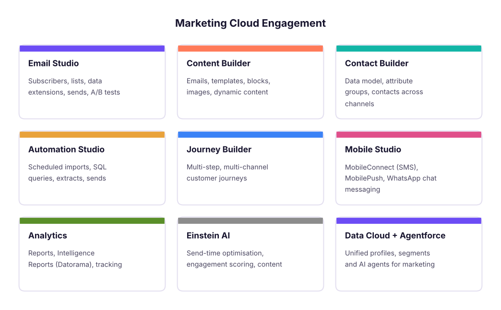
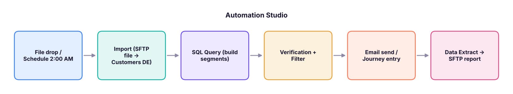

Salesforce Marketing Cloud (SFMC) Complete Guide: Email Studio, Data Extensions, SQL, AMPscript, Journey Builder and Certification
A complete training guide to Salesforce Marketing Cloud Engagement for marketers, analysts and developers. Learn the architecture and studios, subscribers and data extensions, data modelling and Contact Builder, SQL Query Activities, segmentation, Content Builder and AMPscript personalisation, Email Studio sends, Automation Studio, Journey Builder, Mobile Studio (SMS, push, WhatsApp), deliverability, consent and the DPDP Act, reporting, Einstein AI, Data Cloud and Agentforce, plus a capstone and the Marketing Cloud Email Specialist and Administrator certification paths.
- Explain the Marketing Cloud architecture, studios and builders and when to use each
- Model data with data extensions, sendable and testable data, primary keys and Contact Builder
- Segment audiences with filters and SQL Query Activities, and personalise content with AMPscript
- Build automations and multi-channel journeys with entry sources, decisions, waits and goals
- Run compliant, deliverable campaigns and report on them, and prepare for SFMC certifications
What Salesforce Marketing Cloud is
Salesforce Marketing Cloud Engagement (often called SFMC, formerly ExactTarget) is an enterprise platform for sending personalised email, SMS, push and WhatsApp messages and running automated customer journeys at scale. Banks, airlines, retailers and telecom companies in India use it to manage millions of customers, which is why SFMC specialists, developers and consultants are in steady demand.

| Role | Typical work |
|---|---|
| Email/campaign specialist | Builds emails, segments and sends; runs A/B tests |
| SFMC developer | AMPscript, SSJS, SQL, CloudPages, APIs, integrations |
| Administrator | Business units, users and roles, sender profiles, deliverability set-up |
| Consultant/architect | Data model, journeys, Salesforce CRM integration (Marketing Cloud Connect) |
The account structure
- Enterprise account with business units (e.g. India Retail, India Cards) that share or separate data and content.
- Sender authentication package (SAP): a branded sending domain, dedicated IP and private domain for better deliverability.
- Sender profiles, delivery profiles and send classifications (commercial vs transactional) decide who an email is from, the footer and whether unsubscribed people can receive it.
- Users and roles control who can create, approve and send.
Data: subscribers, lists and data extensions
| Object | What it is | Use |
|---|---|---|
| All Subscribers | Master list of email subscribers with status (Active, Unsubscribed, Held, Bounced) | Global unsubscribe and status |
| Lists | Simple subscriber lists | Small, simple programs |
| Data extensions (DEs) | Tables with your own fields and primary keys | Almost all real programs |
| Sendable DE | Has a field mapped to Subscriber Key (and Email) | Can be the audience of a send |
| Testable DE | Holds test records | Previews and test sends |
| Shared DE | Available to several business units | Common reference data |
import pandas as pd
customers = pd.DataFrame({
"SubscriberKey": ["C001", "C002", "C003", "C004", "C005"],
"Email": ["asha@ex.com", "ravi@ex.com", "meera@ex.com", "kabir@ex.com", "nisha@ex.com"],
"FirstName": ["Asha", "Ravi", "Meera", "Kabir", "Nisha"], "City": ["Pune", "Delhi", "Pune", "Mumbai", "Delhi"],
"Tier": ["Gold", "Silver", "Gold", "Bronze", "Silver"], "LastPurchase": pd.to_datetime(["2026-10-02", "2026-06-14", "2026-09-28", "2026-03-01", "2026-10-20"]),
"EmailOptIn": [True, True, False, True, True]})
customers.dtypes.astype(str).to_dict(){'SubscriberKey': 'object', 'Email': 'object', 'FirstName': 'object', 'City': 'object', 'Tier': 'object', 'LastPurchase': 'datetime64[ns]', 'EmailOptIn': 'bool'}Design rules: use a stable Subscriber Key (customer ID, not the email address), set a primary key on every DE, choose field types carefully (Text length, Number, Decimal, Date, Boolean, EmailAddress, Phone, Locale), and keep a data retention policy on large DEs.
Contact Builder and the data model
Contact Builder links DEs to the contact through attribute groups and relationships (one-to-one, one-to-many), so Journey Builder can use attributes like "Tier" or "last order value" in decisions. Plan one master customer DE, related orders and products DEs, and channel-specific DEs for SMS and push.
Segmentation: filters and SQL
Two ways to build audiences:
- Filters (Email Studio or Contact Builder data filters): drag-and-drop conditions such as
City is Pune AND Tier is Gold. - SQL Query Activities in Automation Studio (Microsoft SQL Server syntax,
SELECTonly) that write results into a target DE with Overwrite, Update or Append.
SELECT c.SubscriberKey, c.Email, c.FirstName, c.City
FROM Customers c
WHERE c.Tier IN ('Gold', 'Silver')
AND c.EmailOptIn = 1
AND c.LastPurchase >= DATEADD(day, -60, GETDATE())recent = customers[(customers.Tier.isin(["Gold", "Silver"])) & customers.EmailOptIn & (customers.LastPurchase >= pd.Timestamp("2026-10-31") - pd.Timedelta(days=60))]
recent[["SubscriberKey", "FirstName", "City", "Tier"]]| SubscriberKey | FirstName | City | Tier | |
|---|---|---|---|---|
| 0 | C001 | Asha | Pune | Gold |
| 4 | C005 | Nisha | Delhi | Silver |
Useful system data views for SQL: _Sent, _Open, _Click, _Bounce, _Unsubscribe, _Subscribers, _Job, _Journey, _JourneyActivity (around six months of history), for example "people who opened but did not click in the last 30 days".
Content Builder and personalisation
- Templates and content blocks (text, image, button, HTML, dynamic content, A/B content), reusable across emails.
- Personalisation strings:
%%FirstName%%,%%emailaddr%%. - Dynamic content: rules that show a block by attribute (e.g. different hero image per City).
- AMPscript: SFMC's scripting language for advanced personalisation at send time.
%%[
VAR @name, @tier, @offer
SET @name = AttributeValue("FirstName")
SET @tier = AttributeValue("Tier")
IF @tier == "Gold" THEN
SET @offer = "20% off + free express delivery"
ELSEIF @tier == "Silver" THEN
SET @offer = "15% off this weekend"
ELSE
SET @offer = "10% off your next order"
ENDIF
SET @store = Lookup("Stores", "StoreName", "City", AttributeValue("City"))
]%%
Hi %%=ProperCase(@name)=%%, your %%=v(@tier)=%% offer: %%=v(@offer)=%%.
Your nearest store: %%=v(@store)=%%Other key AMPscript functions: LookupRows, Row, Field, FormatDate, FormatCurrency (₹ with a locale), IIF, Empty, RedirectTo, RequestParameter and CloudPagesURL for landing pages. SSJS (server-side JavaScript) and CloudPages handle forms, preference centres and API calls.
# The same offer logic, to test the AMPscript rules on sample data before you send
offer = {"Gold": "20% off + free express delivery", "Silver": "15% off this weekend"}
for _, r in customers.iterrows():
print(f'{r.FirstName:6s} {r.Tier:7s} -> {offer.get(r.Tier, "10% off your next order")}')Asha Gold -> 20% off + free express delivery Ravi Silver -> 15% off this weekend Meera Gold -> 20% off + free express delivery Kabir Bronze -> 10% off your next order Nisha Silver -> 15% off this weekend
Sending email
- Build or pick the email in Content Builder; set subject line, preheader and personalisation.
- Preview and test: preview against a testable DE, run Content Detective / spam checks, send tests to seed inboxes (Gmail, Outlook, mobile).
- Choose the audience (sendable DE), exclusions (suppression DEs, unsubscribed, recently mailed) and the send classification.
- A/B test subject lines or content on a sample, then auto-send the winner.
- Schedule (consider Einstein Send Time Optimization), approve and send; monitor the Send Log and tracking.
Automation Studio
Automations run steps on a schedule or a file drop trigger:

Activities: Import File, SQL Query, Filter, Data Extract, File Transfer, Send Email, Script (SSJS), Verification (stop if counts look wrong), Wait, Refresh Group. Always add error notifications and a verification step before sends.
Journey Builder
A journey moves each contact through steps over time:
| Element | Examples |
|---|---|
| Entry sources | Data extension (scheduled), API event, Salesforce data (Marketing Cloud Connect), CloudPages form, Audience Builder |
| Activities | Email, SMS, push, WhatsApp, in-app, update contact, Salesforce task/case, custom activity |
| Flow control | Wait (duration, until date, until event), Decision split, Engagement split (opened/clicked), Random split (A/B), Einstein splits |
| Goals and exit criteria | Stop the journey when the customer converts |
| Re-entry settings | Allow, after exit, or never |
Example: cart abandonment — entry by API event "Cart abandoned" → wait 1 hour → email with the cart (AMPscript LookupRows) → wait 1 day → engagement split: clicked → SMS reminder with a code; not opened → resend with a new subject → goal: order placed → exit.
funnel = {"entered": 10000, "email 1 opened": 4200, "clicked": 1150, "SMS sent": 1150, "orders": 520}
prev = None
for step, n in funnel.items():
print(f"{step:16s}{n:7,d}" + (f" {n / prev:6.1%} of previous" if prev else "")); prev = n
print(f"journey conversion: {funnel['orders'] / funnel['entered']:.1%}")entered 10,000 email 1 opened 4,200 42.0% of previous clicked 1,150 27.4% of previous SMS sent 1,150 100.0% of previous orders 520 45.2% of previous journey conversion: 5.2%
Mobile and other channels
- MobileConnect: SMS with keywords, short/long codes and templates (in India, follow DLT registration of headers and templates).
- MobilePush: app push notifications via the SDK; in-app messages.
- WhatsApp (Chat Messaging / via Salesforce messaging): approved templates, opt-in required.
- Advertising Studio: send audiences to Google and Meta for ads.
Deliverability, consent and the law
| Area | Practice |
|---|---|
| Authentication | SPF, DKIM, DMARC on your sending domain (via SAP); warm up new IPs gradually |
| List hygiene | Remove hard bounces and long-inactive subscribers; never buy lists |
| Engagement | Relevant, segmented sends; sunset policies; preference centre |
| Gmail/Yahoo bulk-sender rules (2024+) | Authentication, one-click unsubscribe, spam complaint rate below 0.3% |
| India | DPDP Act: notice and consent, purpose limitation, easy withdrawal; TRAI/DLT rules for SMS |
| Global | GDPR (EU), CAN-SPAM (US) for international audiences |
Reporting and AI
- Tracking: sends, deliveries, opens (note Apple Mail Privacy Protection inflates opens), clicks, bounces, unsubscribes, conversions with web analytics tracking parameters.
- Reports and Intelligence Reports for dashboards; data views + SQL for custom analysis.
- Einstein: Engagement Scoring, Send Time Optimization, Engagement Frequency, Content Selection and Copy Insights.
- Data Cloud and Agentforce: unified customer profiles and segments across Salesforce, and AI agents that help build segments, journeys and content.
Capstone: festive campaign for an Indian retailer
- Data model: Customers, Orders, Stores DEs with keys and relationships in Contact Builder.
- Nightly automation: import → SQL segments (Gold/Silver recent buyers, lapsed 90-day buyers) → verification.
- Email with AMPscript offers by tier and nearest store, dynamic hero by city, A/B subject lines.
- Journey: Diwali launch email → engagement split → SMS for clickers without orders → goal "order placed".
- Report: send-to-order conversion by tier, revenue per email, unsubscribe and complaint rates; recommendations.
Certifications
| Certification | Who |
|---|---|
| Marketing Cloud Engagement Foundations | Beginners (start here) |
| Marketing Cloud Email Specialist | Campaign specialists |
| Marketing Cloud Administrator | Admins |
| Marketing Cloud Developer | AMPscript/SSJS/SQL/API developers |
| Marketing Cloud Consultant | Consultants and architects |
Prepare on Trailhead (free modules, trailmixes and superbadges), practise in a Trailhead Playground or developer org where available, and read the official exam guides for the current topic weights.
Summary
- SFMC = studios and builders for data, content, automation, journeys and channels.
- Data extensions with stable Subscriber Keys and primary keys are the foundation; Contact Builder connects them.
- Segment with filters or SQL Query Activities; personalise with AMPscript and dynamic content.
- Automation Studio runs scheduled data work; Journey Builder runs customer-level, multi-step journeys.
- Deliverability and consent (SPF/DKIM/DMARC, DPDP Act, DLT for SMS) are part of the job.
1. Which object should hold most campaign audiences in SFMC?
2. Which SQL dialect do Query Activities use?
3. What is AMPscript used for?
4. When should you use Journey Builder instead of Automation Studio?
5. Which authentication standards improve deliverability?
6. What should be the Subscriber Key?
Design the data model and a 4-step cart-abandonment journey for an Indian fashion retailer: list the DEs with fields and keys, write the SQL for the "abandoned in last 24 hours, not purchased" audience, write AMPscript that greets by name and shows the top cart item, and define the journey's entry, waits, splits, goal and KPIs.
Show solution
DEs: Customers (SubscriberKey PK, Email, FirstName, City, Tier, EmailOptIn), Carts (CartID PK, SubscriberKey, Created, Status), CartItems (CartID+SKU PK, ProductName, Price, ImageURL). SQL selects carts with Status = 'Abandoned' and Created >= DATEADD(hour,-24,GETDATE()) and no matching order. AMPscript uses LookupOrderedRows on CartItems by CartID ordered by Price desc. Journey: entry API event → wait 1 h → email → wait 1 d → engagement split → SMS to clickers → goal order placed; KPIs: recovery rate, revenue per recipient, unsubscribe rate.
Q: Data extension vs list? Lists hold subscribers with basic attributes and are simple; data extensions are custom tables with your own fields and keys, faster at scale and needed for SQL, relational data and most journeys.
Q: How do you prevent sending to the wrong audience? Use verified SQL with counts, a Verification activity, suppression/exclusion DEs, test sends against testable DEs, approvals, and send classifications that respect unsubscribes.
Q: How do you improve deliverability? Authenticate the domain (SPF, DKIM, DMARC), warm up IPs, clean lists, segment for engagement, honour unsubscribes quickly, keep complaint rates low and monitor bounces.
Q: Journey Builder entry sources? Data extension, API event, Salesforce data via Marketing Cloud Connect, CloudPages forms, and audiences from Data Cloud.
Q: How would you measure a journey? Entry volume, step conversion, goal completion, revenue per contact, time to convert, unsubscribe and complaint rates, compared with a hold-out group.